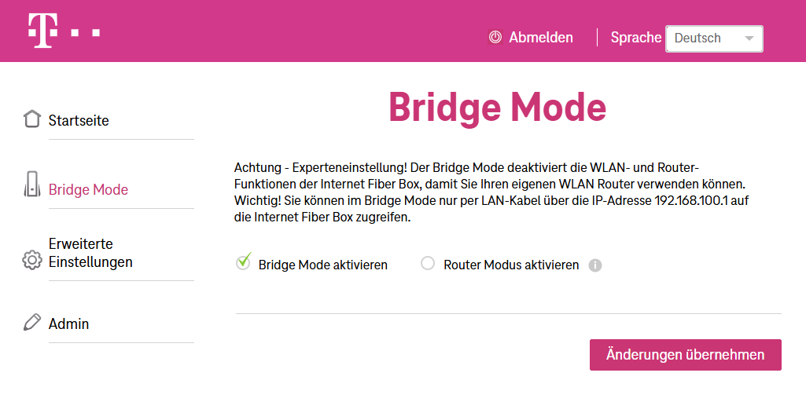

Hallo das Forum!
Erstens ich habe eine Fiber Box mit DOCSIS 3.0. Ich habe sie an und für sich auf Moden-Betrieb laufen derzeit...
Aber ich muss mit 192.168.100.1 mich anmelden, was ich überhaupt nicht verstehe....
ABER meine Frage ist, kann ich aus dem Bridge-Mode wieder in den Modem-Mode wechseln ohne die Technik zu informieren oder brauche ich die dann auch noch mal...
Danke für die Hilfe mal im Voraus 🙂
Hallo @markusffsani , 👋
Es ist grundsätzlich möglich, den Modem-Betrieb (Router-Modus) wieder zu aktivieren, nachdem ein Gerät in den Bridge-Modus versetzt wurde.
Optionen zur Rückkehr in den Modem-Modus
Selbstständige Änderung über die Benutzeroberfläche: Viele Geräte erlauben es, den Modus direkt über die Benutzeroberfläche des Modems zu ändern. Du kannst versuchen, dich über die IP-Adresse (z. B. 192.168.100.1 oder 192.168.0.1) in das Modem einzuloggen und dort den Modem-Modus wieder zu aktivieren.
Rücksetzung auf Werkseinstellungen: Falls du keinen Zugriff auf die Einstellungen hast oder der Bridge-Modus nicht über die Benutzeroberfläche deaktiviert werden kann, kannst du das Gerät auf die Werkseinstellungen zurücksetzen. Dies geschieht in der Regel durch Drücken und Halten des Reset-Knopfes am Modem für etwa 30–60 Sekunden. Danach sollte das Gerät wieder im Standardmodus (Modem-Modus) laufen
Kontakt mit dem technischen Support unter 0676 200 7777: Manchmal kann es erforderlich sein, dass Änderungen am Modus des Geräts durch ihren technischen Support vorgenommen werden müssen, insbesondere wenn der Bridge-Modus aktiviert wurde. In diesem Fall musst du Magenta kontaktieren und um eine Rückstellung auf den Modem-Modus bitten. Dies kann einige Stunden bis Tage dauern,...
Zusätzliche Hinweise
Im Bridge-Modus funktioniert das Gerät nur als Modem und deaktiviert Funktionen wie NAT, Firewall und DHCP-Server, sodass ein externer Router diese Aufgaben übernehmen kann. Wenn du keine weiteren Geräte wie einen separaten Router verwendest, ist es sinnvoller, den Modem-Modus zu nutzen, da dieser alle Netzwerkfunktionen integriert. Falls du dir unsicher bist oder Probleme auftreten, empfiehlt es sich, Magenta zu kontaktieren, um sicherzustellen, dass keine Konfigurationsprobleme auftreten.
Weitere Infos zur Internet Fiber Box findest du hier (Link zu Hardware-Support).
Liebe Grüße, JD. 🌻
@Jonathan Dorian Aber was mir spanisch vorkommt, ist is Arbeite noch mit derm Router-Modus und muss mit der IP 192.168.100.1 einsteigen, weil die andere IP nicht geht......
Sehr merkwürdig.....
Wenn du über 192.168.100.1 Zugriff erhältst, dann passt es doch! Sobald du auf der Routeroberfläche bist, kannst du den Modem-Modus wieder deaktivieren. So zumindest der Plan. 😊
Liebe Grüße, JD 🌻
Am 10.12.2024 um 10:29 schrieb markusffsani:ABER meine Frage ist, kann ich aus dem Bridge-Mode wieder in den Modem-Mode wechseln ohne die Technik zu informieren oder brauche ich die dann auch noch mal...
Wenn du dich bei der 192.168.100.1 anmeldest, solltest du die Möglichkeit haben aus dem Bridge Modus in den Router Modus zu wechseln:

Soweit ich es mitbekommen habe ist es im DOCSIS Standard definiert, dass im Bridge Modus die 192.168.100.1 zu verwenden ist
Am 10.12.2024 um 15:40 schrieb Jonathan Dorian:
Wenn du über 192.168.100.1 Zugriff erhältst, dann passt es doch! Sobald du auf der Routeroberfläche bist, kannst du den Modem-Modus wieder deaktivieren. So zumindest der Plan. 😊
Liebe Grüße, JD 🌻
Das ist alles Richtig! NUR ich bin NICHT im Bridge-Mode....das ist es was mich nun erstaunt!
{kind=link}